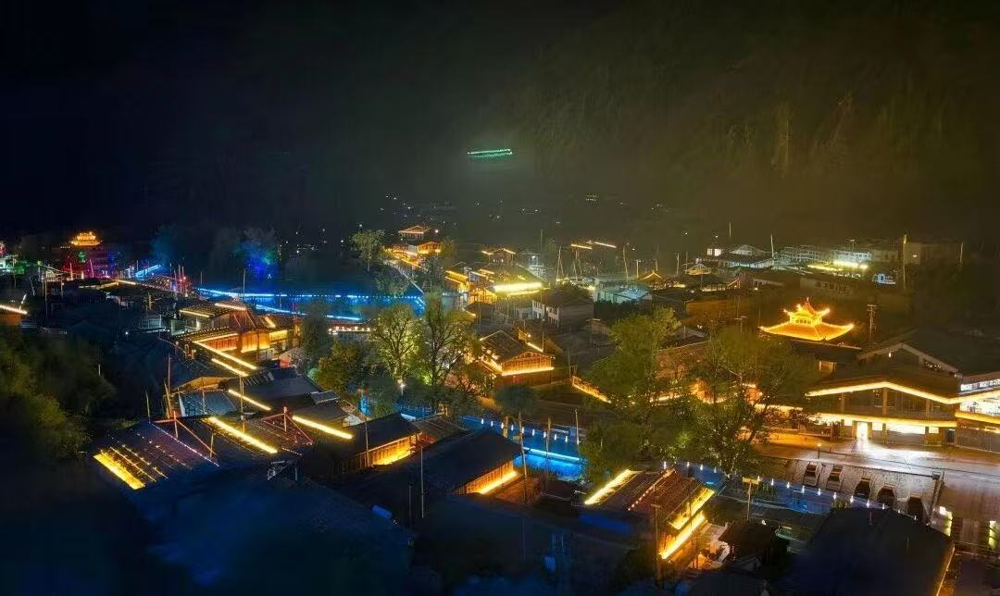
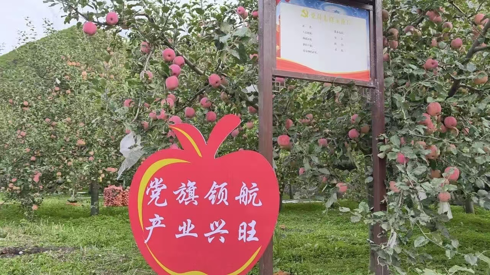

一、长征精神的内涵
把全国人民和中华民族的根本利益看得高于一切
长征精神，是中国共产党人和人民军队革命风范的生动反映，是中华民族自强不息的民族品格的集中展示。在迭部，长征精神体现为红军在艰苦卓绝的环境中，依然坚持“北上抗日”的坚定信念（俄界会议），以及面对天险腊子口时，不畏强敌、敢于突破的拼搏意志。
今天，这种精神并没有随着历史的远去而消散，而是转化为迭部人民脱贫攻坚、乡村振兴、建设美好家园的内生动力。正如央视新闻所报道的：“红色文化+生态资源，绘就了藏乡新画卷”。
二、长征精神在今日迭部的实践
20万元+
俄界村集体年均收入（2024年起）
150多户
俄界村现有居民（含10家农家乐、25家民宿）
634万人次
2026年1-8月迭部县累计接待游客

俄界村：从贫困村到旅游名村
曾经群山环绕、交通闭塞的俄界村，全村只有20多户藏族人家。2016年，村里启动生态文明小康村建设，实施人畜分离、改圈改厕、道路硬化等工程。如今，出山的道路修到了家门口，红色资源带来的客流让开民宿、经营农家乐成为村民增收的新选择。
红色文旅 + 乡村振兴
旺藏镇：红色旅游带火的“甜蜜产业”
在迭部县旺藏镇，650余户人家种植苹果，面积达3600亩。随着前来参观游览的游客逐年增多，旺藏苹果有了新的发展模式。游客在感受长征精神的同时，也品尝到了高原藏乡的优质农产品，实现了红色文化与特色产业的深度融合。
特色农业 + 农旅融合三、互动思考
思考题：精神的力量如何改变地理面貌？
结合你所学的乡土地理知识，想一想：
1. 俄界村从“交通闭塞”到“游客络绎不绝”，交通条件的改善（道路硬化）在其中起到了什么作用？
2. 旺藏镇的苹果种植（特色农业）与当地的气候、地形有什么联系？红色旅游又是如何帮助农产品打开销路的？
3. 你认为“长征精神”在今天迭部的发展中，还体现在哪些方面？